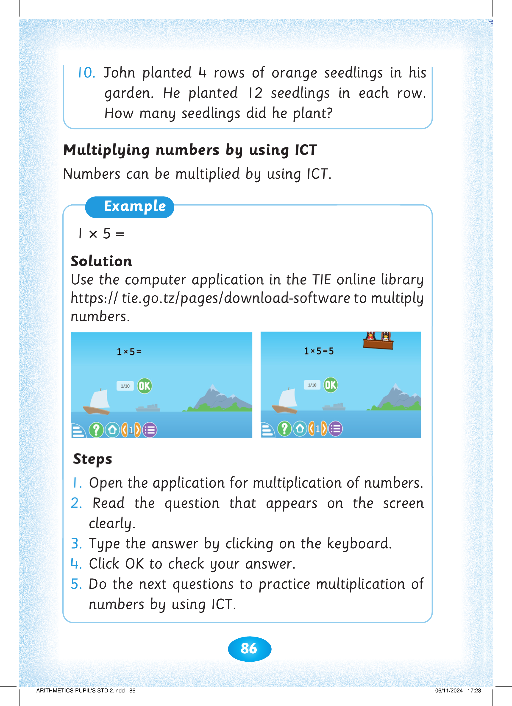
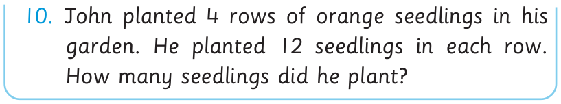

86

10. John planted 4 rows of orange seedlings in his garden. He planted 12 seedlings in each row. How many seedlings did he plant?


garden. He planted 12 seedlings in each row.

How many seedlings did he plant?
Multiplying numbers by using ICT. Numbers can be multiplied by using ICT. Example. 1 × 5 =. Solution. Use the computer application in the TIE online library, https://tie.go.tz/pages/download-software, to multiply numbers. Two computer-screen pictures show the question 1 × 5 and the completed answer 1 × 5 = 5. Steps. 1. Open the application for multiplication of numbers. 2. Read the question that appears on the screen clearly. 3. Type the answer by clicking on the keyboard. 4. Click OK to check your answer. 5. Do the next questions to practice multiplication of numbers by using ICT.
Numbers can be multiplied by using ICT.
Example
1×5=
Solution
Use the computer application in the TIE online library https:// tie.go.tz/pages/download-software to multiply numbers.
Steps
1. Open the application for multiplication of numbers.
2. Read the question that appears on the screen clearly.
3. Type the answer by clicking on the keyboard.
4. Click OK to check your answer.
5. Do the next questions to practice multiplication of numbers by using ICT.





ARITHMETICS PUPIL'S STD 2.indd 86
06/11/2024 17:23